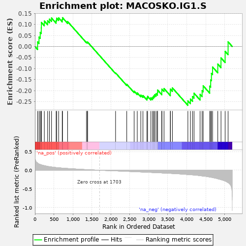
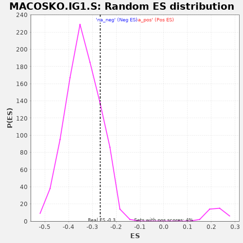

| | | Dataset | al5_v_al2 |
| Phenotype | NoPhenotypeAvailable |
| Upregulated in class | na_neg |
| GeneSet | MACOSKO.IG1.S |
| Enrichment Score (ES) | -0.26715854 |
| Normalized Enrichment Score (NES) | -0.78342664 |
| Nominal p-value | 0.8317757 |
| FDR q-value | 0.92248964 |
| FWER p-Value | 1.0 |
Table: GSEA Results Summary

Fig 1: Enrichment plot: MACOSKO.IG1.S
Profile of the Running ES Score & Positions of GeneSet Members on the Rank Ordered List
| PROBE | GENE SYMBOL | GENE_TITLE | RANK IN GENE LIST | RANK METRIC SCORE | RUNNING ES | CORE ENRICHMENT | | 1 | Ivns1abp | | | 70 | 0.198 | 0.0208 | No |
| 2 | Ttc14 | | | 108 | 0.168 | 0.0427 | No |
| 3 | Neat1 | | | 140 | 0.155 | 0.0636 | No |
| 4 | Tra2a | | | 167 | 0.146 | 0.0839 | No |
| 5 | Slc25a36 | | | 170 | 0.146 | 0.1089 | No |
| 6 | Fam122a | | | 248 | 0.123 | 0.1152 | No |
| 7 | Usp53 | | | 335 | 0.105 | 0.1167 | No |
| 8 | Rnpc3 | | | 383 | 0.095 | 0.1240 | No |
| 9 | Luc7l3 | | | 437 | 0.088 | 0.1290 | No |
| 10 | Nktr | | | 559 | 0.073 | 0.1181 | No |
| 11 | Insr | | | 572 | 0.072 | 0.1283 | No |
| 12 | Zranb2 | | | 625 | 0.067 | 0.1298 | No |
| 13 | Taf15 | | | 719 | 0.058 | 0.1219 | No |
| 14 | Ankrd10 | | | 727 | 0.058 | 0.1306 | No |
| 15 | Arglu1 | | | 861 | 0.048 | 0.1130 | No |
| 16 | Vps72 | | | 1358 | 0.017 | 0.0196 | No |
| 17 | Pnn | | | 1383 | 0.016 | 0.0178 | No |
| 18 | Pold3 | | | 1387 | 0.016 | 0.0200 | No |
| 19 | Cdca7 | | | 2125 | -0.018 | -0.1200 | No |
| 20 | Cdca7l | | | 2420 | -0.031 | -0.1718 | No |
| 21 | Crebzf | | | 2615 | -0.040 | -0.2026 | No |
| 22 | Tipin | | | 2697 | -0.044 | -0.2108 | No |
| 23 | Lnpep | | | 2790 | -0.048 | -0.2204 | No |
| 24 | Brd7 | | | 2847 | -0.050 | -0.2226 | No |
| 25 | Pank2 | | | 2953 | -0.056 | -0.2333 | No |
| 26 | Topbp1 | | | 2968 | -0.056 | -0.2263 | No |
| 27 | Hras | | | 3056 | -0.060 | -0.2328 | No |
| 28 | Wdr76 | | | 3101 | -0.062 | -0.2305 | No |
| 29 | Dis3 | | | 3128 | -0.064 | -0.2245 | No |
| 30 | Msh2 | | | 3156 | -0.065 | -0.2185 | No |
| 31 | Srsf7 | | | 3193 | -0.066 | -0.2140 | No |
| 32 | Ung | | | 3230 | -0.068 | -0.2092 | No |
| 33 | Nasp | | | 3233 | -0.068 | -0.1977 | No |
| 34 | Eif2a | | | 3344 | -0.074 | -0.2063 | No |
| 35 | Cdc25a | | | 3345 | -0.074 | -0.1934 | No |
| 36 | Casp8ap2 | | | 3402 | -0.077 | -0.1909 | No |
| 37 | Ctsd | | | 3569 | -0.086 | -0.2083 | No |
| 38 | Cep57 | | | 3570 | -0.086 | -0.1934 | No |
| 39 | Gmnn | | | 3623 | -0.089 | -0.1881 | No |
| 40 | Mri1 | | | 4031 | -0.117 | -0.2468 | Yes |
| 41 | Mcm2 | | | 4098 | -0.122 | -0.2385 | Yes |
| 42 | Mcm4 | | | 4154 | -0.127 | -0.2272 | Yes |
| 43 | Pcna | | | 4193 | -0.129 | -0.2121 | Yes |
| 44 | Slbp | | | 4353 | -0.148 | -0.2174 | Yes |
| 45 | Uhrf1 | | | 4406 | -0.155 | -0.2006 | Yes |
| 46 | Hells | | | 4434 | -0.158 | -0.1785 | Yes |
| 47 | Dtl | | | 4606 | -0.184 | -0.1798 | Yes |
| 48 | Atad2 | | | 4632 | -0.190 | -0.1518 | Yes |
| 49 | Mcm6 | | | 4652 | -0.193 | -0.1221 | Yes |
| 50 | Sec62 | | | 4682 | -0.199 | -0.0933 | Yes |
| 51 | Ssr3 | | | 4819 | -0.230 | -0.0798 | Yes |
| 52 | Mcm5 | | | 4904 | -0.255 | -0.0519 | Yes |
| 53 | Esd | | | 5013 | -0.292 | -0.0223 | Yes |
| 54 | Dnajc3 | | | 5091 | -0.336 | 0.0210 | Yes |
Table: GSEA details [plain text format]

Fig 2: MACOSKO.IG1.S: Random ES distribution
Gene set null distribution of ES for MACOSKO.IG1.S